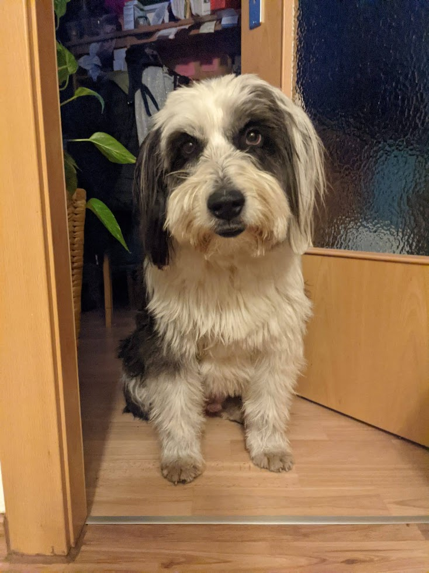

Mega Website
HOME
HALL OF FAME
ABOUT ME
CONTACT
BLOG'S
Theme
light
dark
cupcake
bumblebee
emerald
corporate
synthwave
retro
cyberpunk
valentine
halloween
garden
forest
aqua
pastel
fantasy
wireframe
black
luxury
dracula
cmyk
autumn
business
acid
lemonade
night
coffee
winter
